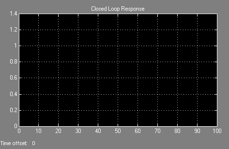
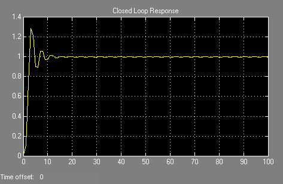

Tunning of PID controller using Particle Swarm Optimization
Author: Wael Mansour (wael192@yahoo.com)
MSc Student, Electrical Enginering Dept, Faculty of Engineering Cairo University, Egypt
Contents
Initialization
clear clc n = 50; % Size of the swarm " no of birds " bird_setp =50; % Maximum number of "birds steps" dim = 2; % Dimension of the problem c2 =1.2; % PSO parameter C1 c1 = 0.12; % PSO parameter C2 w =0.9; % pso momentum or inertia fitness=0*ones(n,bird_setp); %-----------------------------% % initialize the parameter % %-----------------------------% R1 = rand(dim, n); R2 = rand(dim, n); current_fitness =0*ones(n,1); %------------------------------------------------% % Initializing swarm and velocities and position % %------------------------------------------------% current_position = 10*(rand(dim, n)-.5); velocity = .3*randn(dim, n) ; local_best_position = current_position ; %-------------------------------------------% % Evaluate initial population % %-------------------------------------------% for i = 1:n current_fitness(i) = tracklsq(current_position(:,i)); end local_best_fitness = current_fitness ; [global_best_fitness,g] = min(local_best_fitness) ; for i=1:n globl_best_position(:,i) = local_best_position(:,g) ; end %-------------------% % VELOCITY UPDATE % %-------------------% velocity = w *velocity + c1*(R1.*(local_best_position-current_position)) + c2*(R2.*(globl_best_position-current_position)); %------------------% % SWARMUPDATE % %------------------% current_position = current_position + velocity ; %------------------------% % evaluate anew swarm % %------------------------%
Main Loop
iter = 0 ; % Iterations’counter while ( iter < bird_setp ) iter = iter + 1; for i = 1:n, current_fitness(i) = tracklsq(current_position(:,i)) ; end for i = 1 : n if current_fitness(i) < local_best_fitness(i) local_best_fitness(i) = current_fitness(i); local_best_position(:,i) = current_position(:,i) ; end end [current_global_best_fitness,g] = min(local_best_fitness); if current_global_best_fitness < global_best_fitness global_best_fitness = current_global_best_fitness; for i=1:n globl_best_position(:,i) = local_best_position(:,g); end end velocity = w *velocity + c1*(R1.*(local_best_position-current_position)) + c2*(R2.*(globl_best_position-current_position)); current_position = current_position + velocity; sprintf('The value of interation iter %3.0f ', iter ); end % end of while loop its mean the end of all step that the birds move it xx=fitness(:,50); [Y,I] = min(xx); current_position(:,I) %
ans =
0.9399
0.5610
